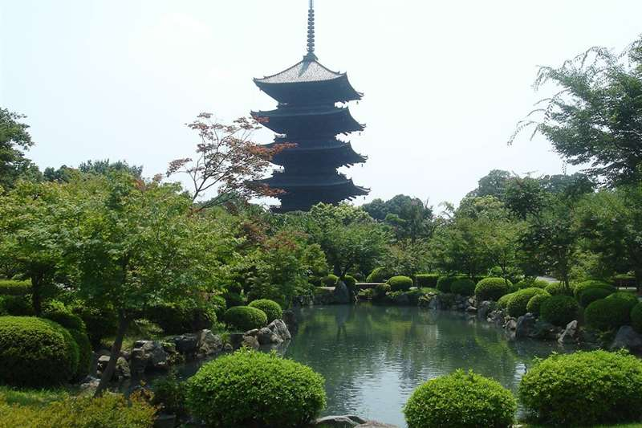
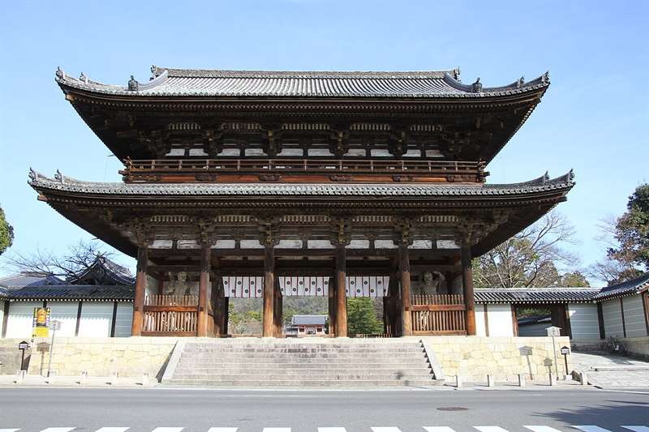
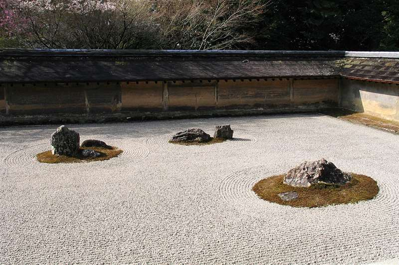

Giorno 4 di 15 · Domenica 6 dicembre · Kyoto
Garakuta-ichi a To-ji, Ninna-ji e Ryoan-ji



In sintesi
- Mattina il Garakuta-ichi: cianfrusaglie sotto la pagoda più alta del Giappone.
- Pomeriggio col tram Randen a Ninna-ji e al giardino zen di Ryoan-ji.
- Sera l'anguilla sotto la frittata di Kyogoku Kaneyo.
Itinerario
- 08:15Dall'hotel a To-ji — To-ji sta in fondo a Omiya-dori, la stessa strada dell'hotel: sempre dritti verso sud per due chilometri e trecento metri, mezz'ora a piedi, oppure dieci minuti di taxi per un migliaio di yen.
- 08:30Garakuta-ichi a To-ji solo la prima domenica del mese — oggi è la prima domenica di dicembre, e nel recinto di To-ji si tiene il Garakuta-ichi, il mercato dell'antiquariato: garakuta vuol dire letteralmente "cianfrusaglie". Un centinaio e mezzo di banchi (fino a trecentocinquanta nelle edizioni grosse) di ceramiche vecchie, utensili, ferraglia, stampe, kimono smessi, giocattoli di latta e roba senza nome. È il fratello minore e più serio del Kobo-ichi del 21, quello da mille banchi, che voi mancate per quattro giorni. Ci vanno gli antiquari di mestiere, non i pullman. Ed è il motivo per cui ci si va di mattina: i banchi si montano all'alba e i pezzi buoni se ne vanno nelle prime ore. Contanti, e sul prezzo si tratta.
- 10:30La pagoda, il Kondo e il Kodo — finito il giro dei banchi, il tempio. La pagoda a cinque piani è la più alta del Giappone, 55 metri di legno, ricostruita nel 1644 per ordine del terzo shogun Tokugawa, ed è patrimonio UNESCO. Nel Kodo, la sala delle lezioni, ci sono ventuno statue disposte come un mandala in tre dimensioni, voluto da Kukai, il monaco a cui l'imperatore affidò il tempio nell'823: buona parte sono del IX secolo e sono tesori nazionali. Il recinto è gratis, Kondo e Kodo sono a pagamento.
- 11:30Rientro verso l'hotel — dieci minuti di taxi o di autobus su Omiya-dori. Si passa dalla camera a posare quello che avete comprato, e si riparte leggeri.
- 12:00Pranzo a Shijo-Omiya, sotto casa.
- 13:00Randen fino a Omuro-Ninnaji — il tram a un vagone parte dal capolinea sotto l'hotel: linea di Arashiyama fino a Katabiranotsuji, poi la linea Kitano fino a Omuro-Ninnaji. Mezz'ora scarsa fra le case, a 250 yen. Oggi il tram vi porta ai templi e vi riporta indietro, ed è per questo che la giornata non ha bisogno di taxi.
- 13:30Ninna-ji — fondato nell'888, per quasi mille anni ne è stato abate un principe della famiglia imperiale, e si vede: la porta dei guardiani all'ingresso è enorme, e dentro c'è un'altra pagoda a cinque piani del 1644, gemella per epoca di quella di stamattina. Il recinto è gratis. Il Goten, l'ex residenza dell'abate con i corridoi coperti e i giardini, costa 800 yen: in inverno è aperto dalle 9:00 alle 16:30, ultimo ingresso alle 16:00. A dicembre quasi nessuno.
- 14:45A piedi fino a Ryoan-ji — dieci minuti lungo la Kinukake-no-michi, la strada ai piedi delle colline che collega i due templi.
- 15:00Ryoan-ji — il giardino zen più famoso del mondo: quindici rocce sulla ghiaia bianca, disposte in modo che da qualunque punto se ne vedano solo quattordici. Da dicembre a febbraio chiude alle 16:30 (ultimo ingresso poco prima), quindi arrivateci con margine. Sedetevi sulla veranda in legno e non fate niente per venti minuti. Poi il giro dello stagno Kyoyochi, mentre cala la luce.
- 16:30Randen da Ryoanji — la fermata è a sette minuti a piedi, e il tram vi riporta a Shijo-Omiya con un cambio a Katabiranotsuji. Un'ora in camera prima di cena.
- 18:00Cena a Shinkyogoku — due fermate di Hankyu da Omiya a Kyoto-Kawaramachi e sette minuti a piedi. Anguilla (vedi sotto).
Le tappe su Google Maps
Toccate una tappa e si apre in Google Maps: da lì Indicazioni vi dice treno e binario partendo da dove siete.
La mappa si carica solo se la toccate, per non consumare dati: il tracciato è a piedi; dove l'itinerario dice treno o metro, prendete quelli.
Dove mangiare
- Pranzosotto casa, a Shijo-Omiya: attorno all'incrocio ci sono catene di ramen, gyoza e teishoku. Oggi il pasto importante è la sera.
- CenaKyogoku Kaneyo (京極かねよ), su Rokkaku-dori all'angolo con Shinkyogoku — anguilla dai primi anni del periodo Taisho, cioè da oltre cent'anni, nella stessa casa di legno. Il piatto da prendere è la kinshi-don: la ciotola di unagi grigliata e laccata, coperta da una frittata di dashimaki spessa due dita che deborda dalla ciotola. Sui 3.000 yen la porzione normale, e il brodo di fegato d'anguilla si ordina a parte. Bib Gourmand nella Guida Michelin 2026. La domenica è aperto 11:30-15:30 e 17:00-20:30, ultimo ordine alle 20:00; chiude il mercoledì.
Note e dritte
La logica della giornata: il Randen, il tram che ha il capolinea sotto l'hotel, qui fa da spina dorsale. La mattina si scende a piedi lungo la strada di casa fino al mercato, a metà giornata si ripassa dalla camera a posare gli acquisti, e il pomeriggio il tram porta ai due templi del nord-ovest e riporta indietro. Nessun taxi obbligatorio, nessun cambio di quartiere complicato.
Perché niente Arashiyama e Kinkaku-ji. Li avete fatti nel 2025, il quarto giorno del viaggio col gruppo: il Padiglione d'Oro al mattino e la foresta di bambù subito dopo. Rifarli vorrebbe dire spendere una giornata di Kyoto sulle due cose più affollate della città, già viste. E i macachi del Monkey Park li lasciate stare: quelli di Jigokudani, nell'acqua calda, battono qualsiasi collina. Resta solo quello che col gruppo non c'era: il mercato, Ninna-ji e Ryoan-ji.
Come si compra al Garakuta-ichi. Si gira tutto una volta senza comprare, perché il pezzo che vi piace al terzo banco spesso si ritrova meglio al trentesimo, e al secondo giro si compra. Si tratta con garbo, meglio se si prendono due cose insieme. Ceramica e ferro pesano: se trovate qualcosa di grosso, chiedete se lo imballano per il viaggio. Ci sono molti giocattoli vecchi e roba di latta anni '60; cartucce e console quasi mai, perché questo è un mercato di antiquari e non di negozi di usato.
Due versioni della mattina, si decide a colazione. Piano A: la giornata come è scritta, col mercato alle 8:30. Piano B: si dorme, si esce alle 11 e il pomeriggio a nord-ovest si fa con calma, aggiungendo Myoshin-ji, il più grande complesso zen di Kyoto, a una fermata di Randen da Omuro, con il drago dipinto sul soffitto dell'Hatto, la sala del Dharma. Il costo del piano B è uno solo, ma è grosso: il Garakuta-ichi è la prima domenica del mese, e la prossima cade a viaggio finito. Con la pioggia forte i banchi ci sono lo stesso ma sono la metà, e il piano B diventa ragionevole.
Sul Ryoan-ji: in inverno chiude alle 16:30 ed è l'unico orario stretto della giornata. Se il mercato vi trattiene, si taglia il Goten di Ninna-ji, non Ryoan-ji.
Se oggi non gira. Il pomeriggio sì, il mercato no Il pomeriggio a nord-ovest è sacrificabile: Ninna-ji e Ryoan-ji non hanno date e reggono anche un rientro anticipato. Il Garakuta-ichi no: è la prima domenica del mese e la prossima cade a viaggio finito. Se oggi non gira, tenete il mercato e mollate il resto.